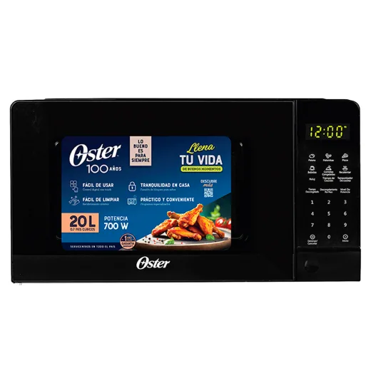
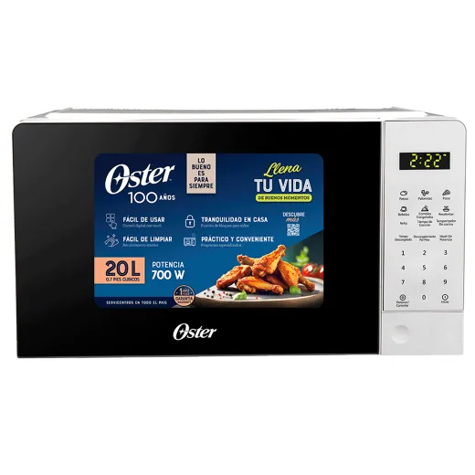
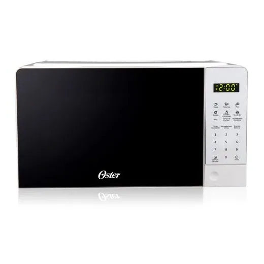
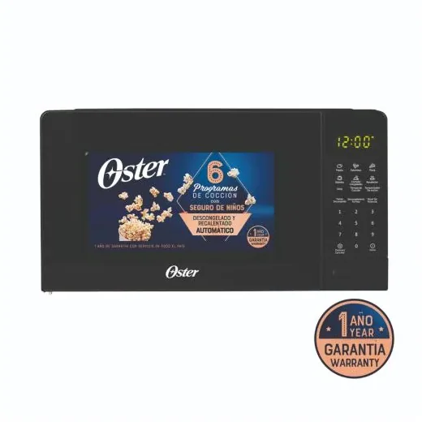
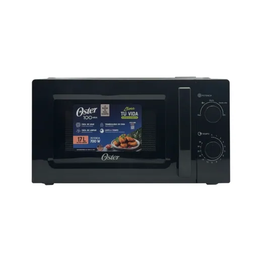
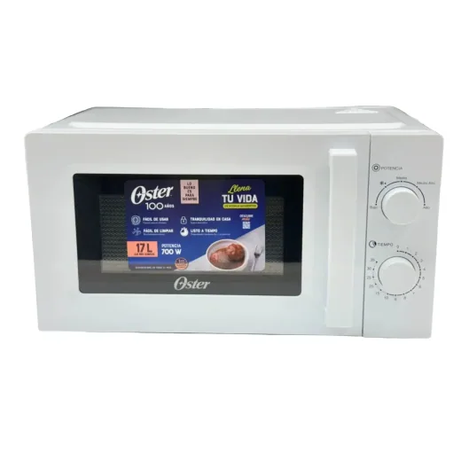

Inicio › Microondas › Oster
Microondas Oster en Honduras: precios comparados
15 productos Oster en 3 tiendas (Walmart, Gallo más Gallo, Lady Lee). Desde L 1,598.99.
 Microondas Oster de 0.9 pies cúbicos y capacidad de 25 LL 2,490En Walmart
Microondas Oster de 0.9 pies cúbicos y capacidad de 25 LL 2,490En Walmart Microondas Oster OGGME2701 de 7 pies cúbicosL 2,800En Walmart
Microondas Oster OGGME2701 de 7 pies cúbicosL 2,800En Walmart Oster Microondas 1 1 FtL 2,845.25En Walmart
Oster Microondas 1 1 FtL 2,845.25En Walmart Microondas Oster análogo de 0.7 pies cúbicos negroL 2,150En Walmart
Microondas Oster análogo de 0.7 pies cúbicos negroL 2,150En Walmart Microondas Oster negro 0.7 pies cúbicos 20 LL 2,895En Walmart
Microondas Oster negro 0.7 pies cúbicos 20 LL 2,895En Walmart
Horno microondas Oster 0.7CP OGGE3702L 1,995En Gallo más Gallo
Horno microondas Oster 0.7CP OGGE3701L 1,895En Gallo más Gallo Microondas Oster 0.9 pies cúbicosL 3,295En Walmart
Microondas Oster 0.9 pies cúbicosL 3,295En Walmart Microondas Digital 1.1' Acero/NegroL 3,299.01En Lady Lee
Microondas Digital 1.1' Acero/NegroL 3,299.01En Lady Lee
Microondas Digital Oster 0.7' Blanco – 700W con 6 Menús AutomáticosL 1,799En Lady Lee
Microondas Digital 0.7' NegroL 1,799En Lady Lee Microondas Oster 1.1 pies cúbicosL 3,495En Walmart
Microondas Oster 1.1 pies cúbicosL 3,495En Walmart Microondas Digital 1.3' SilverL 3,799En Lady Lee
Microondas Digital 1.3' SilverL 3,799En Lady Lee
Microondas de Perilla 0.6 Cu Ft · Color NegroL 1,598.99En Lady Lee
Microondas de Perilla 0.6 Ft. Cu. · Color BlancoL 1,598.99En Lady Lee
Preguntas frecuentes
¿Dónde están más baratos los microondas Oster en Honduras?
Revisa cada producto: mostramos el precio en cada tienda.